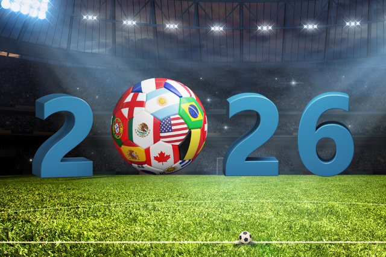
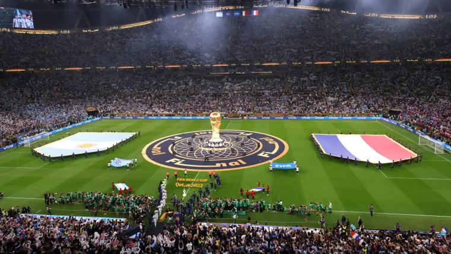
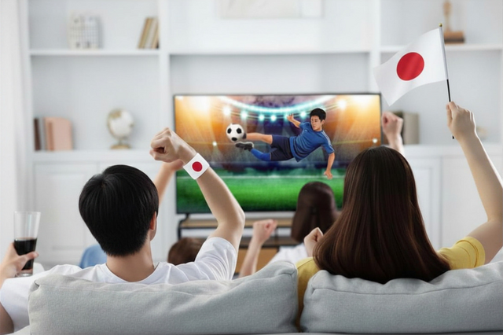

ワールドカップでの日本代表の躍進に、思わず手に汗握った人も多いはず。でも——「正直、なぜ日本はここまで強くなった…？」「戦術や選手の力だけじゃない"何か"がある気がする」。そう感じたあなたの直感は、正しいです。
実は、日本代表の勝利の裏には、ピッチに立たない"影の立役者"がいます。それが——大学生たちによる、執念のデータ分析。森保ジャパンは東京大学・筑波大学の学生の頭脳を借り、対戦相手を丸裸にする一大分析プロジェクトを動かしていました。
この記事では、ニュースではあまり語られない「知られざる意外な影の立役者」の正体を、一次情報をもとに徹底解説します。
日本の強さの裏に"頭脳の組織化"あり
- 日本代表に帯同する分析担当4人を、東大・筑波大の学生 約40人が後方支援
- 体制は2024年1月アジアカップから始動。48カ国大会で最大40チームをリアルタイム分析
- 筑波大はJリーグのアナリストを輩出する"養成所"＝日本サッカーの頭脳の供給源
日本勝利の"影の立役者"＝データ分析チームとは
結論から言います。現代サッカーの勝敗は、「ピッチ外のデータ分析」で大きく左右されます。
かつて2022年大会で日本がドイツ・スペインという強豪を撃破した"ジャイアントキリング"。その裏には、相手を徹底的に研究し尽くした緻密なスカウティング（分析）がありました。そして2026年大会に向けて、その分析体制はさらに進化を遂げています。

その進化の鍵を握るのが、大学生たちのマンパワーと専門知識。森保一監督も「本当に日本の総合力ですね」と、その貢献に言及しています。
強豪国が潤沢なスタッフを抱える中、日本は"大学との産学連携"という独自の発想で分析力を底上げした。これは世界的にも珍しい、日本ならではの"頭脳戦"です。
森保ジャパンを支える「東大・筑波大 情報分析チーム」約40人の正体
日本サッカー協会（JFA）は、日本代表に帯同する4人の分析担当だけでは、増え続ける分析対象をさばききれないという課題を抱えていました。そこで編成されたのが、東京大学・筑波大学の学生を中心とした情報分析チームです。
JFAの宮本恒靖会長や森保監督は、「4人だけでは大会中に毎日徹夜になり体が持たない」という現実から、この"頭脳の組織化"に踏み切ったと語っています。最大で40チームの情報をリアルタイムで更新する——そのスピードこそが勝負を分けるのです。
なぜ筑波大？「Jリーグのアナリスト養成所」蹴球部データ班
東大と並んで名前が挙がる筑波大学。実はここ、"サッカーアナリストの名門"なんです。

筑波大学蹴球部には、監督直轄の「パフォーマンス局」という組織があり、その中にデータ班が存在します。
- 部員は150名以上、「一人一役」で12のセクションに分業
- データ班のミッションは「スタッツ、数字でゲームを表現する」
- 情報学類（数字を扱う研究領域）の学生が主体的に設立を提案
- 監督は小井土正亮氏（清水・G大阪でデータ分析を担当した経歴）
- Jリーグで活躍するアナリストを多数輩出
つまり筑波大は、日本サッカー界の"頭脳"を供給し続けてきた人材育成機関。この土壌があるからこそ、代表のデータ分析にも学生が貢献できるのです。
彼らは何を分析しているのか？データ分析の中身
「データ分析」と言っても、その作業は驚くほど地道で執念的です。映像を1プレーずつ止め、定義したスタッツをひたすら記録していきます。
- 🎥 映像を止めてスタッツを手入力（1試合の分析に6〜8時間かかることも）
- 📊 ポゼッション率をエリア別（攻撃／中盤／守備）で可視化
- 🔄 近年はリアルタイム分析やGPS位置データとの結合も推進
この「人間の執念 × テクノロジー」の掛け算が、対戦相手のクセ・弱点・パターンをあぶり出し、ピッチ上の選手や監督の判断を支えています。
なぜ"データ分析"が勝敗を分ける時代になったのか
理由はシンプル。2026年大会は出場国が48に拡大し、分析すべき相手が激増したからです。情報の質とスピードが、そのまま勝敗に直結します。
だからこそ、表に出ない"データ分析という影の立役者"が、日本勝利の本当の要因の一つと言えるのです。準備した者が勝つ——それが現代サッカーの真実です。
あなたも"影の立役者"側へ｜サッカーを10倍深く楽しむ
ここまで読んで、「自分もデータ目線でサッカーを観てみたい」と思いませんか？ プロのアナリストの思考法は、本で学べます。観戦の解像度が一気に上がりますよ。

① "勝つサッカー"の分析思考を学ぶ
② "影の立役者"を本気で目指すなら｜データ分析×Python
「将来はスポーツアナリストに」という人も、まずは1冊の分析本＋1試合の"観察"から。あなたの"観る目"が、誰かの勝利を支える日が来るかもしれません。
よくある質問（FAQ）
はい。日本代表に帯同する分析担当を、東大・筑波大などの学生グループ（約40人）が後方支援しています（出典：文春Number・Qoly）。
蹴球部にデータ班があり、情報学類の学生が分析を主導。Jリーグのアナリストを多数輩出する"養成所"だからです。
もちろん。スタッツを見ながら観戦したり、入門書を1冊読むだけでも、試合の見え方が劇的に変わります。
まとめ｜勝利の裏に、名もなき"頭脳"あり
- 日本代表の躍進を支えるのは、東大・筑波大の学生による情報分析チーム（約40人）
- 筑波大はアナリストを輩出し続ける"頭脳の名門"
- 48カ国大会では、データ分析力＝総合力がますます重要に
ピッチの熱狂の裏で、画面とにらめっこを続ける"影の立役者"たち。その存在を知れば、次の試合は何倍も面白く見えるはずです。あなたもデータ目線で、サッカーを"読む"楽しさを始めてみませんか？